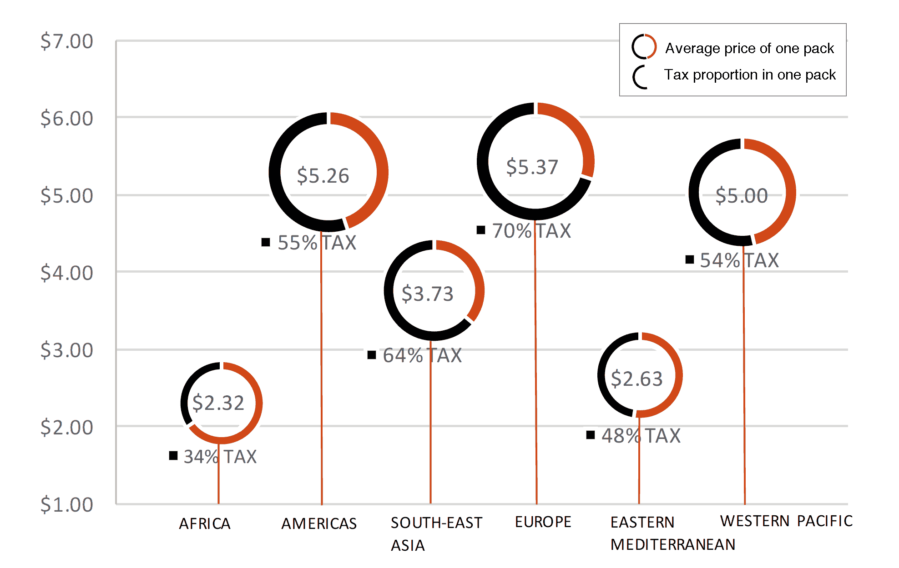
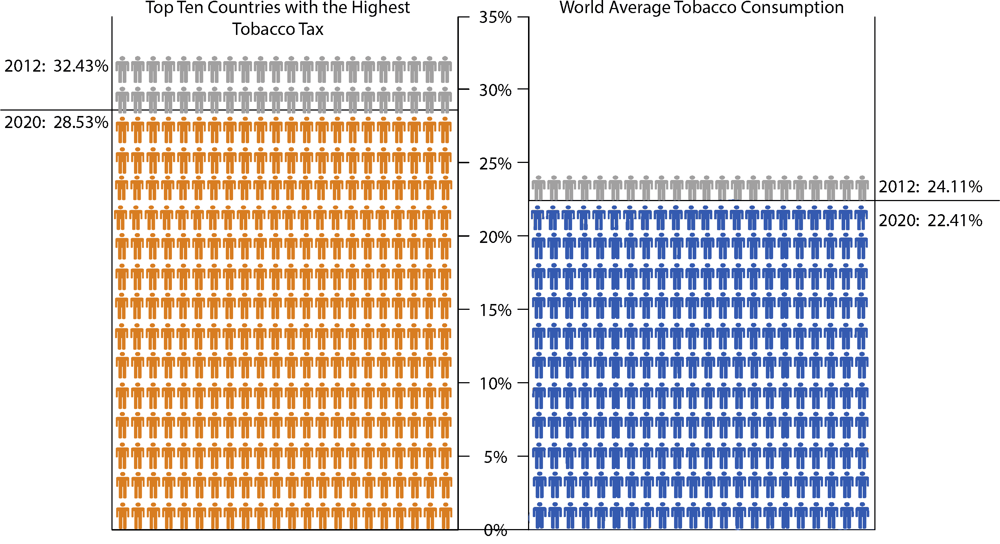

BY JING ZENG | 15 JUNE 2017
Tobacco Tax: The Weapon To Reduce Smoking
Tobacco smoking is one of the largest preventable causes of death and disease. It is associated with an increased risk of a wide range of health conditions, including heart disease, diabetes, stroke, cancer, renal disease, eye disease and respiratory conditions.
According to WHO, increasing the price of tobacco through higher taxes is the single most effective way to encourage tobacco users to quit and prevent children from starting to smoke. Taxes need to be increased regularly to correct for inflation and consumer purchasing power. Tobacco taxes are generally well accepted by the public and raise government revenues. Allocating tax revenues for tobacco control and other important health and social programmes further increases their popularity.
GLOBAL TOBACCO CONSUMPTION, PRICE AND TAX (2012)
An overview of worldwide tobacco consumption percentage verses price and tax.
(Click on the dots to view details for each country)
Data source: World Health Organisation: Global Health Observatory data repository, Current smoking of any tobacco product (age-standardized rate).
While about 5.8 trillion cigarettes were smoked worldwide in 2012, cigarette consumption is still on the rise.
Increasing Tobacco excise tax, which results in higher tobacco product prices, is among the most effective tobacco control measures. The bulk of the peer-reviewed evidence from countries in all stages of economic development confirms that when tobacco product prices increase, people use less of these dangerous products, or quit using them, or never start.
THE PRICE AND TAX OF CIGARETTES (2014)
Average National Taxes and Retail Price for a Pack of 20 Cigarettes in Six World Regions

Data source: WHO report on the global tobacco epidemic 2015, Appendix IX: Tax and price data.
A fundamental building block of economic theory is the fact that increasing (or decreasing) the price of a commodity reduces (or increases) demand for that commodity. Price elasticity of demand refers to the extent to which use of a product falls or rises after increases or decreases in its price.
While demand for tobacco products is not as elastic as demand for many other consumer products, research has consistently demonstrated that increases in the price of tobacco products are followed by moderate falls in both the percentage of people smoking and the amount or number of tobacco products that remaining smokers consume. The percentage of people smoking declines because tax increases discourage non-users from starting, encourage current users to quit and, also very important, discourage former smokers from starting again. Because increases in tobacco taxes result in higher tobacco prices for everyone, the effect of even small resulting reductions in tobacco use can be very large across the whole population.
(Scollo, M, Bayly, M. 13.3 The price of tobacco products in Australia. In Scollo, MM and Winstanley,MH [editors]. Tobacco in Australia: Facts and issues. Melbourne: Cancer Council Victoria; 2016.)
PRICE ELASTICITY OF DEMAND FOR TOBACCO PRODUCTS
Tobacco price vs. proportion of current and quit smokers in Australia, 1991 to 2013
(Click on the blue triangle or timeline to view changes over years. After the lines finish growing, hover / tap on the grey dots to view details in each year.)
Data source: Tobacco in Australia: Facts and issues. Melbourne: Cancer Council Victoria; 2016. cited National Drug Strategy Household Surveys
Increasing the retail price of tobacco products through higher taxes is the single most effective way to decrease consumption and encourage tobacco users to quit. When tobacco prices increase:
- Fewer people use tobacco;
- People who continue to use tobacco, consume less;
- People who have quit are less likely to start again;
- The young are less likely to start using tobacco.
Tobacco taxes are generally well accepted – and even supported by many tobacco users – because most people understand that tobacco is harmful. In high-income countries, a 10% increase in tobacco prices will reduce consumption by about 4%. The effect of higher prices on reducing consumption is likely to be greater in low- and middle-income countries.
EFFECTIVENESS OF TOBACCO TAX, 2012 - 2020(projected)
Significant decreased smoking rate of 10 countries with the highest tobacco tax

Data source: World Health Organisation: Global Health Observatory data repository, Current smoking of any tobacco product (age-standardized rate).
Ten countries with the highest tobacco tax in 2012 have been selected, whose tobacco smoking rates are compared with the worlds average rate. The ten countries are: Bulgaria, Hungary, Greece, lovakia, Chile, Turkey, France, Czech Republic, Finland and Poland. World average smoking rate drops only 1.70% during the eight years, while these selected counties’ rate decreases by 3.90%.
Patterns of cigarette consumption vary widely within countries. Cigarette consumption displays large disparities and is associated with lower socioeconomic status, even in low- and middle-income countries. These inequalities can be reduced by the use of targeted tobacco control measures. For example, revenue from cigarette tax increases could be directed to fund tobacco prevention and cessation programs for disadvantaged groups.